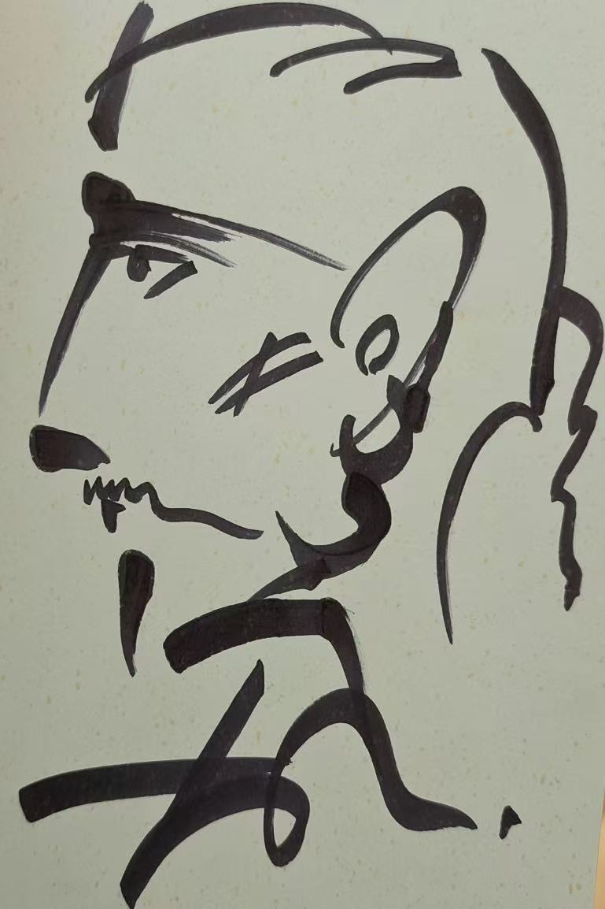

Theme Introduction
This is not an official website but a tribute created by fans who admire Dabing's talents and works.

Why This Website Exists
This platform is designed for fans of Dabing to:
- Connect with others who share a love for Dabing.
- Share and collect interesting stories and achievements about Dabing.
- Explore Dabing's artistic works and personal charm together.